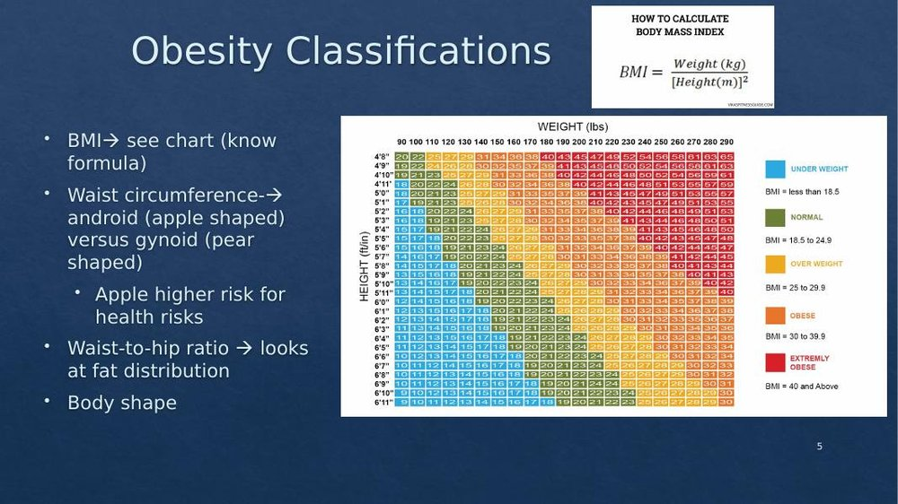
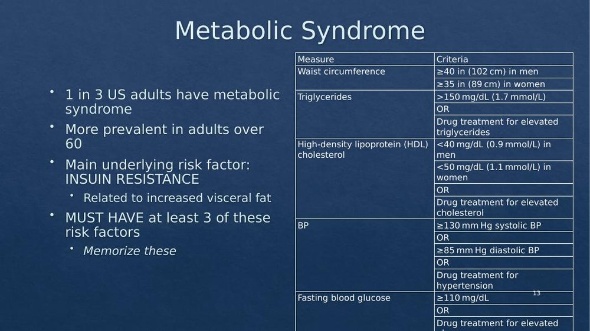
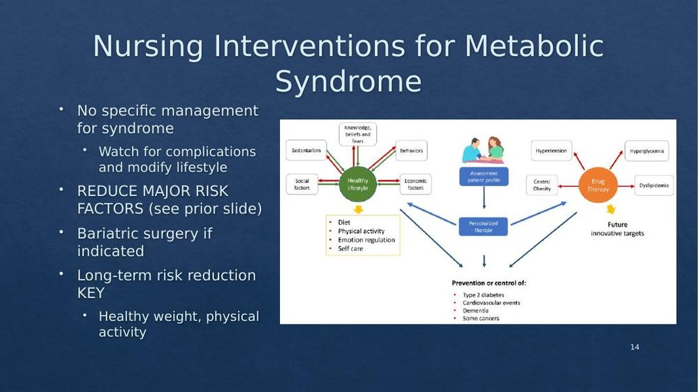

Fundamentals Review · Topic 3
Obesity & Metabolic Syndrome
Obesity is an excessively high amount of body fat/adipose tissue — a major risk factor for many leading causes of death (heart disease, type 2 diabetes, several cancers). Over 40% of U.S. adults are considered obese, with the highest prevalence in the South and in ethnic minority groups; about 47% of the Hispanic population and 46.8% of the African American population are obese.
Classifying Obesity

- BMI = weight (kg) ÷ height (m)². Most common classification method — know the formula and the ranges shown above.
- Waist circumference: >35 inches in females, >40 inches in males is associated with more health consequences.
- Waist-to-hip ratio: looks at fat distribution — >0.95 in males or >0.8 in females indicates higher risk.
- Body shape: Android/"apple" shape (fat carried in the waist/abdomen) carries a higher risk of heart disease and diabetes. Gynoid/"pear" shape (fat carried in the hips/lower body) carries a higher risk of osteoporosis, varicose veins, and cellulite.
Contributors to Obesity
- Primary obesity: excessive caloric intake relative to energy expenditure.
- Secondary obesity: related to a cause outside of intake/output — congenital abnormalities or hormonal imbalances.
- Genetics: a strong predisposition — about 70–75% of patients who become obese have a genetic predisposition, involving multiple genes rather than a single one.
- Physiologic regulation: adipocytes (fat cells) produce over 100 different proteins, affecting appetite and contributing to insulin resistance, hyperlipidemia, and hypertension.
- Environmental factors: larger U.S. portion sizes; lower socioeconomic status/education correlates with higher obesity risk; sedentary lifestyles/jobs.
- Sleep: inadequate sleep decreases glucose tolerance and insulin sensitivity, increases evening cortisol and ghrelin, and decreases leptin — all of which increase hunger and appetite.
- Psychosocial factors: a culture of unhealthy eating, mindless/boredom eating, and using food as a reward — habits that start young and are hard to break as adults.
- Childhood obesity is a specific public health focus — about 1 in 5 children are obese as early as ages 2–5, and children who are obese are much more likely to become obese adults.
Health Risks of Obesity
Depression and higher suicide risk, type 2 diabetes, sleep apnea, pulmonary hypertension, exercise intolerance, musculoskeletal issues and impaired mobility, higher risk of several cancers, GI issues (gallstones, GERD), and significant cardiovascular risk factors.
Nursing Assessment & Communication
- Assess: past health history, risk factors/contributors, what can realistically be modified (genetics and many environmental/socioeconomic factors can't be targeted directly — focus education on what the patient can change), medications that may cause weight gain or correctable hormonal imbalances, surgical history (prior or candidacy for weight-loss surgery), and obesity-related health risks already present (BP, lipids, skin breakdown, sleep apnea/sleep hygiene, work of breathing, musculoskeletal problems, reproductive/fertility issues).
- Never be judgmental. Use therapeutic communication and assess the patient's readiness to change — timing matters. Right after a new cancer diagnosis or an amputation is not the time to bring up weight loss; right after a cardiac event (e.g. a new stent) is often when patients are genuinely motivated to make lifestyle changes.
- Explore the patient's motivation for weight loss (seeing grandchildren graduate, keeping up with friends on a walk) — this builds connection and shows you care, beyond just clinical numbers.
Nursing Interventions: Lifestyle & Nutrition
- Achieving a "goal BMI" is often unrealistic. Modest weight loss of 3–5% of body weight has real health benefits — 1–2 lbs/week is a reasonable target (roughly 50 lbs/year).
- Nutrition: don't encourage fad diets (keto, gluten-free, vegan/vegetarian marketed for fast results) — restrictive diets are hard to maintain and often rebound. The key is decreasing caloric intake relative to expenditure. A 1,200-calorie restricted diet is the general recommendation; an 800-calorie/day diet is only used short-term when medically necessary and under a provider's care. Weekly weight checks (not daily), eating regularly rather than skipping meals, measuring portions, avoiding concentrated sweets, reducing fat via cooking method (baking/broiling/steaming over frying), adequate fluids, and 5 servings of fruits/vegetables a day. Warn patients that plateaus are common and expected for days to weeks.
- Exercise: 30 minutes a day is a great goal, but meet the patient where they are — going from 2,000–3,000 steps/day to a 10,000-step goal is unrealistic; aiming for 4,000 is more appropriate. Consider access/safety (an unsafe neighborhood for walking, or no home internet for workout videos in rural areas) when recommending how to exercise.
- Behavior modification: self-monitoring (food diary), stimulus control (e.g. changing where/how snacking happens), and counseling.
- Support groups (e.g. Weight Watchers) can help; be cautious recommending for-profit commercial weight-loss centers. Some insurers/employers offer benefits for these programs.
- Drug therapy: several appetite-suppressing drugs exist, but only orlistat is FDA-approved. These take months to show results, should never be used alone (always paired with lifestyle changes), and have significant side effects. Discourage over-the-counter diet aids.
- Surgical intervention (bariatric surgery) can also help, but — like drugs — must be combined with ongoing lifestyle modification, not used as a stand-alone fix.
Metabolic Syndrome
- A group of metabolic risk factors that increase a person's risk of cardiovascular disease, stroke, and diabetes. About 1 in 3 U.S. adults have metabolic syndrome — more prevalent in adults over 60.
- The main underlying risk factor is insulin resistance, driven largely by increased visceral fat (subcutaneous fat carries lower risk than visceral fat).
- A patient must have at least 3 of the 5 criteria below to be diagnosed with metabolic syndrome.

| Measure | Criteria |
|---|---|
| Waist circumference | ≥40 in (102 cm) in men; ≥35 in (89 cm) in women |
| Triglycerides | >150 mg/dL (1.7 mmol/L), or on drug treatment for elevated triglycerides |
| HDL ("good") cholesterol | <40 mg/dL (0.9 mmol/L) in men; <50 mg/dL (1.1 mmol/L) in women, or on drug treatment for elevated cholesterol |
| Blood pressure | ≥130 mm Hg systolic or ≥85 mm Hg diastolic, or on drug treatment for hypertension |
| Fasting blood glucose | ≥110 mg/dL, or on drug treatment for elevated glucose |
The instructor's framing: "memorize these" — meaning know that a patient with more of these risk factors present is at higher cardiovascular risk, and that 3 or more together is what defines metabolic syndrome specifically.
Nursing Interventions for Metabolic Syndrome

- There is no single specific management for metabolic syndrome as a whole — instead, address each risk factor individually, watch for complications, and focus on lifestyle modification.
- Bariatric surgery can be indicated for appropriate patients.
- Long-term risk reduction is the key — healthy weight, physical activity, and personalized lifestyle changes based on the patient's specific profile.
- The goal is always to prevent or control cardiovascular events, type 2 diabetes, and the associated risk of cancers and dementia.
Self-Test Flashcards
Click a card to flip it and check your answer.
Practice Questions
All 20 Must Know + Extra Practice questions for this section, pulled from the same bank as Build Your Own Exam. Answer each, then submit to see your score and rationales.